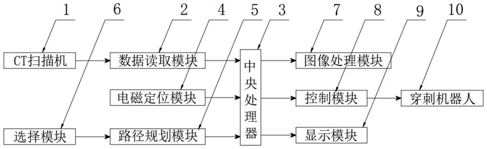

发明名称--用于穿刺手术机器人CT舱内三维影像重建和定位分析系统
| 申请号 | CN202010207981.2 | 申请日 | 2020.03.23 | ||
| 公开（公告）号 | CN111603205A | 公开（公告）日 | 2020.09.01 | ||
| IPC分类号 | A61B10/02; A61B6/03; A61B34/10; A61B34/20; A61B34/30; A61B90/11; G06T7/00; G06T7/70 | 申请（专利权）人 | 苏州新医智越机器人科技有限公司; | ||
| 发明人 | 牛福永;李振晓;乔飞; | 优先权号 |
摘要:
摘要附图:
